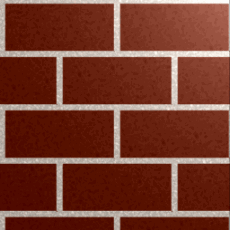

- Pojem textura
- Textúrovanie (resp. presnejšie nanášanie textúr ) sa oznaèuje princíp zafarbenie povrchu zobrazovacích telies rôznymi obrazcami.
Dôle�ité pritom je, �e sa nijako nemení geometrické vlastnosti telies, len sa inak zobrazuje ich povrch. Obrazce, ktoré sa na povrch telies nanášajú,
sa nazıvajú textúry (textures). Tieto textúry sú väèšinou predstavované plošnımi obrázky (dvojdimenzionálne textúry), niektoré grafické systémy však
podporujú aj vykres¾ovanie jednorozmernıch a dokonca trojrozmernıch (objemu) textúr.
Obrazce pre textúry sa mô�u vytvára� nieko¾kımi spôsobmi. Buï je mo�né pou�i� klasické rastrové obrázky (vzniknuté napríklad nama¾uje,
vyfotením alebo naskenovaním), alebo sa textúra mô�e vytvára� pomocou rôznych algoritmov zalo�enıch väèšinou na fraktálne technikách - tımto spôsobom vznikajú
takzvané procedurálne textúry . Procedurálne textúry mo�no pou�i� buï pre vıpoèet rastrovıch obrázkov pred vlastnım vykres¾ovaním
(po vıpoète obrázku sa táto textúra chová ako ka�dı inı rastrovı obrázok so všetkımi vıhodami i nevıhodami), alebo sa mô�e vıpoèet textúr vykonáva�
v reálnom èase a� pri vykres¾ovaní, prièom sa parametre vıpoètu textúry nastaví pod¾a aktuálnej ve¾kosti a orientácie plôšky, na ktorú sa textúra nanáša.
Túto druhú mo�nos� však OpenGL priamo nepodporuje, vıpoèet procedurálnych textúr je teda nutné vykonáva� "ruène".
V ïalšom texte sa budeme najviac zaobera� textúrami reprezentovanımi rastrovımi obrázky, nezávisle na tom, akım spôsobom vznikli.
Aj keï reè bude preva�ne o dvojdimenzionálnych textúrach (teda bitmapách a pixmapách ), väèšina tu popisovanıch vlastností sa vz�ahuje aj na jednorozmerné
a trojrozmerné textúry. Prípadné vınimky a odlišnosti si samozrejme postupne popíšeme.

Na obrázku je ukázaná dvojdimenzionálne, "ruène" nakreslená textúra v grafickom editore. Rastrové textúry budeme v demonštraènıch príkladoch vyrába�
buï programovo (rôzne šachovnice a pod), alebo ich budeme naèíta� z externıch súborov (obrázkov typu bmp).
Podobne, ako je bitmapa èi pixmap zlo�ená zo základnıch rastrovıch elementov ( pixelov ), je textúra zlo�ená z Texelov.
Pixel a texel majú rovnaké vlastnosti a podobnı èi dokonca ekvivalentnı spôsob ulo�enia v pamäti. V ïalšom texte sa však budeme obidva pojmy navzájom odde¾ova�,
tj pixel je element zobrazená na obrazovke, kde�to texel je rastrovı element (väèšinou) dvojrozmerné textúry.
Textúrovanie potom spoèíva v nanášaní Texel na opísaná povrch.
Textúru mo�no pou�i� vo všetkıch prípadoch, keï je nutné vykres¾ova� telesá s opakujúcou sa štruktúrov. Typickım príkladom je tehlová stena,
ktorá je v reálnom svete zlo�ená z jednotlivıch tehál spojenıch maltou. Pri modelovaní tejto múru síce mô�eme ka�dú tehlu reprezentova� napríklad kvádrom
s vhodne zvolenou farbou, ale v prípade vykres¾ovanie ve¾kıch múrov by poèet vykreslovanıch telies rástol príliš rıchlo, tak�e by sa zbytoène zaberala pamä�í,
a zbytoène by sa zvyšoval nárok na vıpoètovı èas. Ešte horšia situácia by nastala napríklad u koberca, kde by bolo nutné vytvára� všetky farebné vlákna a pod.
V tıchto prípadoch je mo�né stenu alebo koberec reprezentova� jednou plochou (zlo�enú napríklad z dvoch trojuholníkov alebo jedného štvoruholníka)
a na túto plochu potom nanies� predom vytvorenı rastrovı obrázok, ale vykreslenie bude na dnešnıch poèítaèoch dostatoène rıchle a v prípade dostatoènej
ve¾kosti (rozlíšenie) textúry aj kvalitné.
Textúry sa tie� niekedy pou�ívajú trochu inım spôsobom pre vytváranie a následné vykreslenie rôznych zlo�itıch modelov, napríklad stromov.
Buï je mo�né strom namodelova� ako teleso obsahujúce a� nieko¾ko tisíc polygónov, alebo je mo�né vytvori� dvojrozmernı obrázok stromu z nieko¾kıch smerov
a strom vykresli� ako nieko¾ko vzájomne sa pretínajúcich plôch s aplikovanou kontúrou stromu - viï tretí obrázok.
V tomto prípade však textúra musí by� v niektorıch miestach prieh¾adná, èo však pri vykres¾ovaní nepredstavuje väèší problém.
Táto technika sa nazıva billboarding , preto�e sa vychádza z podobnosti s klasickımi billboardami.
Vıhody pou�itia rastrovıch textúr
Pou�itie rastrovıch textúr so sebou prináša samozrejme svoje vıhody aj nevıhody. Ako sme si u� povedali, pou�íva sa technika textúrovanie ako urèitá náhrada
pri zobrazovaní zlo�itıch povrchov telies (múr, omietka, drevo, kameò), kedy sa tento všeobecne nehomogénne povrch nahradí plôškou s nanesenou textúrou.
Zále�í na vhodnej vo¾be textúry, ve¾kosti objektu a nasvietenie celej scény, èi táto náhrada bude dostatoèné alebo èi u�ívate¾ uvidí vizuálne chyby v scéne.
Ve¾kou vıhodou rastrovıch textúr je ich ¾ahká implementácia vo vykreslovacím re�azci. Jednoduché grafické akcelerátory riešili textúrovanie tak,
�e sa do ich vykreslovacího re�azca pridala vyrovnávacia pamä� pre textúry a nieko¾ko interpolátor, pomocou ktorıch sa riešil prístup do textúrovacích pamäti.
Dnešné grafické akcelerátory idú ove¾a ïalej: textúry je mo�né komprimova�, sú podporované mipmap (textúry vo viacerıch rozlíšeniach),
antialiasing, multitextury apod textúrovacích jednotka však stále patrí k tım èastiam vizuálneho systému, ktorá má ve¾mi dobrı pomer zlo�itos� / vizuálny efekt.
Ïalšou vıhodou textúrovanie je, �e pokia¾ u textúr pou�ijeme prieh¾adnos� (nazıvanú aj alfa kanál ), je mo�né vizuálne zmeni� geometriu predmetov,
preto�e sa predmet mô�e na niektorıch miestach javi� ako deravı. Uká�ka tejto techniky je zobrazená na prvom obrázku. Poznamenajme, �e pri pou�ití
transparentnosti potrebné programovo zotrieïi� prieh¾adné alebo poloprieh¾adné plôšky, preto�e by v tomto prípade Z-buffer (pamä� håbky)
nepracoval korektne - aj prieh¾adné texely by sa "vykreslili" a poškodili tak informáciu o håbke fragmentu ulo�enú v Z-bufferu .
Nevıhody rastrovıch textúr
Prvou vá�nou nevıhodou tıchto textúr je ich vopred dané rozlíšenie, teda poèet pixelov, z ktorıch sa textúra skladá. Pri vo¾be rozlíšenie textúry sa v�dy musí
zvoli� kompromis medzi dvoma extrémami. Prvım extrémom je vo¾ba textúry s malım rozlíšením, èo však pri zobrazovaní vedie k vidite¾nım chybám
(spomeòme napríklad staršie hry typu Wolfenstein alebo Doom, ktoré pou�ívali pomerne hrubé textúry s rozlíšením 64x64 pixelov; u tıchto hier sa samozrejme
ani OpenGL ani grafická akcelerácia nepou�ívala). Druhım extrémom je vo¾ba textúry s neúmerne ve¾kım rozlíšením, kedy sa naopak plytvá pamä�ou na
grafickom akcelerátora.
Druhá nevıhoda spoèíva vo fakte, �e ak zobrazujeme textúru na obrazovke a pou�ije sa zväèšenie alebo zmenšenie poètu zobrazovanıch pixelov
(èo sa stáva pri textúrovanie takmer v�dy, preto�e sa na textúrovanı povrch pozeráme z rôznych smerov a vzdialeností), dochádza k aliasu
(zjednodušene povedané tvorbe moaré), ktorı nie je mo�né principiálne odstráni�, mo�no len zmierni� jeho vizuálnu podobu. Preto sa pou�ívajú rôzne metódy
odstránenia aliasu (tj metódy antialiasing ), ktoré však komplikujú zobrazovacie re�azec a všeobecne vedú k spomaleniu vykres¾ovanie.
Tretia nevıhodou je skutoènos�, �e textúry zaberajú pomerne ve¾ké mno�stvo pamäte. Ak je v pamäti grafického akcelerátora dostatoèné miesto,
je mo�né textúry nahra� do tejto pamäte a vykres¾ovanie tak nieko¾konásobne urıchli�. Ak je však v tejto pamäti miesta málo
(oblas� pamäti grafického akcelerátora je mimo iného obsadená všetkımi farbovım buffery, pamä�ou håbky, stencil bufferom apod),
musí sa textúry pri vykres¾ovanie nahráva� z hlavnej pamäte poèítaèa, èo za�a�uje zbernicu alebo port a spoma¾uje vykres¾ovanie.
Túto nevıhodu èiastoène rieši rôzne metódy komprimácie textúr.
Textúry mô�u by�:
- jednorozmerné - sem patria farebné prechody (vytvárame zadávaním rôznych farieb do vrcholov plôch)
- dvojrozmerné - sem patria zosnímané obrázky a tie� vypoèítané textury (fraktály)
(majú šírku a vıšku)
- trojrozmerné
(majú šírku, vıšku a håbku)
Teraz si uká�eme ako vytvori� farebnı povrch pomocou manuálneho priradenia farieb ka�dému pixelu - vytvoríme farebnú "štruktúru",
ktorú budeme potom na plochu "na�ahova�". Vzorku mo�no vytvori� zadávaním hopdnoty ka�dého pixla, alebo zobratím nejakého obrázka.
Obmedzenie na ktoré treba dáva� pozor je �e rozmery vzorky musia by�
mocniny 2. (napr. 32, 64, 128, 256).
Aby sme mohli pracova� s textúrami je nutné:
- Povoli� prácu s textúrami - napr. príkaz glEnable(GL_TEXTURE_2D);
- Vytvori� štruktúru, kde bude povrch zadanı v texeloch - mô�me vytvori� manuálne zadaním vlastnosti texelu alebo naèítaním obrázka.
- Vytvori� prepojenie OpenGl na našu vytvorenú textúru - príkaz glTexImage2D()
- Nastavi� parametre zobrazenia zobrazovania textúry - príkaz glTexParameteri() resp. glTexParameterf()
Povoli� textúru
glEnable(GL_TEXTURE_1D); //povolí jednorozmernú textúru
glEnable(GL_TEXTURE_2D); //povolí jednorozmernú textúru - toto budeme pou�íva� - je to u� zadané v súbore Unit1.h
glEnable(GL_TEXTURE_3D); //pre povolenie trojrozmernıch textúr - nebudeme sa im venova�
Vytvori� štruktúru
Uká�eme si v nasledovnıch èastiach ako vytvori� štruktúru manuálne, ako vytvori� štruktúru naèítaním z obrázka. Štruktúra ba mala by� štvorcového
rozmeru n x n, kde n je z mno�iny {32,64,128,256}, ak pou�ívame viac textúr volíme 128 alebo 64 inak 256
Prepoji� štruktúru na OpenGl
glTexImage2D(GL_TEXTURE_2D, 0, 3, 256, 256, 0, GL_RGB, GL_UNSIGNED_BYTE, &bmp);
// 1. par. ........ v�dy da� GL_TEXTURE_2D
// 2. par. ........ v�dy da� 0 (má vıznam ak urobíme viac textur pre rôzne detaily - mipmapy)
// 3. par. ........ poèet farieb RGB=3, RGBA=4 (ak potrebujeme nastavova� priesvitnos�, volíme 4)
// 4. par. ........ rozmer textúry v smere x
// 5. par. ........ rozmer textúry v smere y
// 6. par. ........ v�dy da� GL_UNSIGNED_BYTE (typ premennej v texture), je mo�né voli� aj úspornejšie modely
Nastavenie parametrov zobrazovania textúry
Súradnice v textúre sú oznaèované
s ... vodorovná súradnica - celá textúra je v intervale <0 ; 1>
t ... zvislá súradnica - celá textúra je v intervale <0 ; 1>
Prvé urèíme èo sa má dia�, ak pri zadávaní bodu z textúru pou�ijeme hodnotu mimo intervalu <0 ; 1>,
je mo�né voli� opakovanie - textúra je akoby nekoneèná, tvorená kachlièkami o rozmere 1
alebo volíme natiahnutie - textúra sa zdeformuje/natiahne do zadanej hodnoty
glTexParameteri(GL_TEXTURE_2D, GL_TEXTURE_WRAP_S, GL_REPEAT); // v smere osi x povolime opakovanie textury
glTexParameteri(GL_TEXTURE_2D, GL_TEXTURE_WRAP_T, GL_REPEAT); // v smere osi y povolime opakovanie textury
glTexParameteri(GL_TEXTURE_2D, GL_TEXTURE_WRAP_S, GL_CLAMP); // v smere osi x povolime na�ahovanie textury
glTexParameteri(GL_TEXTURE_2D, GL_TEXTURE_WRAP_T, GL_CLAMP); // v smere osi y povolime na�ahovanie textury
Ako druhé urèíme ako sa textúra bude chova� pri zmenšovaní/zveèšovaní. Textúra mô�e ma� viac texelov viac ako povrch pixelov a musíme prepoèíta�
farbu jednotlivıch pixelov pod¾a nejakého vzorca. Sú mo�né dva základné postupy
Urèi� farbu pixelu pod¾a najbli�šieho texelu
Urèi� farbu pixelu pod¾a viacerıch najbli�ších texelov lineárnou aproximáciou - presnejšie ale pomalšie
glTexParameteri(GL_TEXTURE_2D, GL_TEXTURE_MAG_FILTER, GL_LINEAR); // spôsob vıpoètu bodov aproximáciou (textura vaèšia)
glTexParameteri(GL_TEXTURE_2D, GL_TEXTURE_MIN_FILTER, GL_LINEAR); // spôsob vıpoètu bodov aproximáciou (textura menšia)
glTexParameteri(GL_TEXTURE_2D, GL_TEXTURE_MAG_FILTER, GL_NEAREST ); // spôsob vıpoètu bodov pomocou najbli�šieho (textura vaèšia)
glTexParameteri(GL_TEXTURE_2D, GL_TEXTURE_MIN_FILTER, GL_NEAREST ); // spôsob vıpoètu bodov pomocou najbli�šieho (textura menšia)